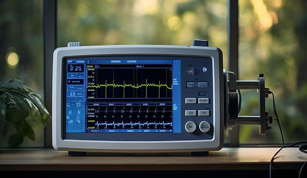

Loading...
Medical
Medical

Biomedical Applications
Diagnosis of lung cancer or stroke based on CT scan. Estimating the risk of sudden cardiac death or other heart disease based on electrocardiograms and cardiac MRI images. Classification of skin lesions on skin films. Detection of indicators of diabetic retinopathy in eye films.
Medical device seal probe
The influence of AI continues to grow and inevitably has an effect on medical device manufacturers. He inspection method for medical device packaging. Thermal vision system identifies the package seal (green rectangle).
Vial counting
Artificial intelligence helps in counting and inspecting
and missing, final package probes useful to manufacturing industries, and
packing teams. This one is more important for vial manufacturers.
Medical device PCB probe
Typical Software This is a medical device: software that triggers an alarm when a patient stops breathing. Non-medical device AI-based software: An AI algorithm that summarizes the medical literature.
Final Assembly verification
An AI-based quality control camera with which you can create an ML model to detect component/product manufacturing defects in a factory assembly line. The camera uses an SBC board that drives a pre-trained model for tracking purposes.

Medical device probe
Artificial intelligence is technology that mimics human activity, decision-making and learning. In healthcare, AI-based medical devices: Automate tasks, integrate data from multiple sources and identify trends.
Cell counting
Once the sample is loaded onto the sensor, it is drawn through the sensing zone and then through the micro channels to estimate cell volume and cell size. Once 50 μL of sample has been counted, the sensor tells the instrument to stop counting. When the count is complete, the instrument screen will display “Count complete.

Cell sorting
Cell sorting involves cell identification and cellselection, and the subsequent differentiation of different cell types. It is used to obtain homogeneous cell populations from mixed cell sam ples. In the FACS method one can specifically label target cells with fluorescent dyes via antibodies.
Medical product probe
Artificially intelligent computer systems are widely used in medical science. Common applications include patient tracking, end-to-end drug discovery and development, improving doctor-patient communication, transcribing medical documents such as prescriptions, and treating patients remotely.
Services


© Adople AI, All Right Reserved.